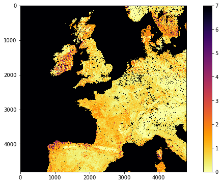
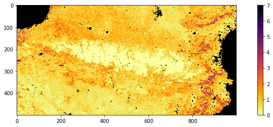
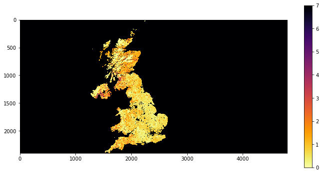
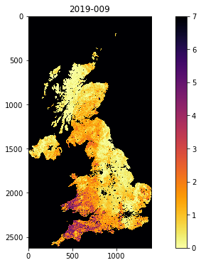
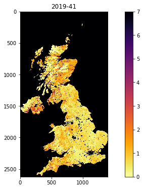

040 GDAL: mosaicing and masking
Purpose
In this section, we'll look at combining both raster and vector data to provide a masked dataset ready to use. We will produce a combined dataset of leaf area index (LAI) over the UK derived from the MODIS sensor that we have examined before.
At the end of this session, you should be able to use one or more of these methods to obtain a numpy array with a MODIS datatset for a particular place and time.
Prerequisites
You will need some understanding of the following:
- 001 Using Notebooks
- 010 Variables, comments and print()
- 011 Data types
- 012 String formatting
- 013_Python_string_methods
- 020_Python_files
- 021 URLs
- 022 Pandas
- 023 Plotting
- 024 Image display
- 030 NASA MODIS Earthdata
- 031 Numpy
- 032 More numpy
You will need to remember:
- the SDS in MODIS datasets
- how to do
numpyslicing and numpy functions to get array statistics
Test
You should run a NASA account test if you have not already done so.
MODIS dataset access
You should by now be able to access MODIS data, through the various routines in modisUtils.py we have used in 024 Image display
and 030 NASA MODIS Earthdata.
If we want more complex access, we can use getModisFiles to return a dictionary of multiple days, tiles, and SDS. We can use this information as the basis for creating tiles datasets in gdal.
from geog0111.modisUtils import getModisFiles
kwargs = {
'product' : 'MCD15A3H',
'tile' : ['h17v03','h18v03'],
'year' : 2019,
'doys' : [41],
'sds' : ['Lai_500m']
}
data_MCD15A3H = getModisFiles(verbose=False,timeout=1000,**kwargs)
data_MCD15A3H
{'Lai_500m': {41: {'h17v03': 'HDF4_EOS:EOS_GRID:"/shared/groups/jrole001/geog0111/e4ftl01.cr.usgs.gov/MOTA/MCD15A3H.006/2019.02.10/MCD15A3H.A2019041.h17v03.006.2019050221756.hdf":MOD_Grid_MCD15A3H:Lai_500m',
'h18v03': 'HDF4_EOS:EOS_GRID:"/shared/groups/jrole001/geog0111/e4ftl01.cr.usgs.gov/MOTA/MCD15A3H.006/2019.02.10/MCD15A3H.A2019041.h18v03.006.2019050221757.hdf":MOD_Grid_MCD15A3H:Lai_500m'}}}
An example of the full dataset name is:
print(data_MCD15A3H['Lai_500m'][41]['h17v03'])
HDF4_EOS:EOS_GRID:"/shared/groups/jrole001/geog0111/e4ftl01.cr.usgs.gov/MOTA/MCD15A3H.006/2019.02.10/MCD15A3H.A2019041.h17v03.006.2019050221756.hdf":MOD_Grid_MCD15A3H:Lai_500m
Armed with the SDS description, we can read a dataset from the MODIS file using g.ReadAsArray() after we have opened it. It returns a numpy array. We introduce np.unique that returns the unique values in a numpy array:
from osgeo import gdal
import numpy as np
this_sds = data_MCD15A3H['Lai_500m'][41]['h17v03']
# open the SDS of dataset 0
g = gdal.Open(this_sds)
data = g.ReadAsArray()
del g
print(type(data))
print('max:',data.max())
print('max:',data.min())
# get unique values, for interest
print('unique values:',np.unique(data))
<class 'numpy.ndarray'>
max: 255
max: 0
unique values: [ 0 1 2 3 4 5 6 7 8 9 10 11 12 13 14 15 16 17
18 19 20 21 22 23 24 25 26 27 28 29 30 31 32 33 34 35
36 37 38 39 40 41 42 43 44 45 46 47 48 49 50 51 52 53
54 55 56 57 58 59 60 61 62 63 64 65 66 67 68 69 70 250
253 254 255]
Exercise 1
Recall that the MODIS LAI data need a scaling factor of 0.1 applied, and that values of greater than 100 are invalid.
For the dataset described by:
kwargs = {
'product' : 'MCD15A3H',
'tile' : ['h17v03','h18v03'],
'year' : 2019,
'doys' : [41],
'sds' : ['Lai_500m']
}
- Use
gdalto read the data into anumpyarray called lai - print the shape of the array
lai - Find the maximum valid LAI value in the dataset
- find at least one pixel (row, column) which has that maximum value.
You will need to recall how to filter and mask numpy arrays and use np.where.
Tile stitching with gdal.BuildVRT
Each MODIS tile has (SDS) datasets that are typically 1200x1200 pixels (1 km resolution) or 2400x2400 pixels (500 m resolution). Whilst we have to consider the MODIS tiles when downloading a dataset, after that point, we will probably want to work with data over some area that may only be a portion of a tile, or that may involve multiple tiles.
One approach to this is to read the individual tile data as above, the sub-set or stitch together multiple tiles. This is perfectly possible using numpy (see np.vstack and np.hstack to follow that up), but not generally very convenient.
Another factor is that, whilst the datasets are on regular grids, each location in the grid covers a unique geographical area. Once we load the data into a numpy array, we are no longer using the coordinate information available in the original geospatial dataset.
A final factor can be that it might be memory-inefficient to process data by reading it all into a large array.
Instead then, we can use gdal to stitch together geospatial data. A convenient way of doing this is to form a new gdal virtual file, using gdal.BuildVRT (check the documentation).
This function takes two inputs: the output filename (in the variable ofile) and a set of GDAL format filenames.
Let;'s first generate the dataset of filenames:
from osgeo import gdal
from geog0111.modisUtils import getModisFiles
kwargs = {
'product' : 'MCD15A3H',
'tile' : ['h17v03','h18v03','h17v04','h18v04'],
'year' : 2019,
'doys' : [41],
'sds' : ['Lai_500m']
}
data_MCD15A3H = getModisFiles(verbose=False,timeout=5000,**kwargs)
data_MCD15A3H
{'Lai_500m': {41: {'h17v03': 'HDF4_EOS:EOS_GRID:"/shared/groups/jrole001/geog0111/e4ftl01.cr.usgs.gov/MOTA/MCD15A3H.006/2019.02.10/MCD15A3H.A2019041.h17v03.006.2019050221756.hdf":MOD_Grid_MCD15A3H:Lai_500m',
'h18v03': 'HDF4_EOS:EOS_GRID:"/shared/groups/jrole001/geog0111/e4ftl01.cr.usgs.gov/MOTA/MCD15A3H.006/2019.02.10/MCD15A3H.A2019041.h18v03.006.2019050221757.hdf":MOD_Grid_MCD15A3H:Lai_500m',
'h17v04': 'HDF4_EOS:EOS_GRID:"/shared/groups/jrole001/geog0111/e4ftl01.cr.usgs.gov/MOTA/MCD15A3H.006/2019.02.10/MCD15A3H.A2019041.h17v04.006.2019050222228.hdf":MOD_Grid_MCD15A3H:Lai_500m',
'h18v04': 'HDF4_EOS:EOS_GRID:"/shared/groups/jrole001/geog0111/e4ftl01.cr.usgs.gov/MOTA/MCD15A3H.006/2019.02.10/MCD15A3H.A2019041.h18v04.006.2019050220136.hdf":MOD_Grid_MCD15A3H:Lai_500m'}}}
This returns a hierarchy of dictionaries.
The top level is the sds (Lai_500m here). Then doy (41 here).
At the bottom level we have:
doy_v = data_MCD15A3H['Lai_500m'][41]
doy_v
{'h17v03': 'HDF4_EOS:EOS_GRID:"/shared/groups/jrole001/geog0111/e4ftl01.cr.usgs.gov/MOTA/MCD15A3H.006/2019.02.10/MCD15A3H.A2019041.h17v03.006.2019050221756.hdf":MOD_Grid_MCD15A3H:Lai_500m',
'h18v03': 'HDF4_EOS:EOS_GRID:"/shared/groups/jrole001/geog0111/e4ftl01.cr.usgs.gov/MOTA/MCD15A3H.006/2019.02.10/MCD15A3H.A2019041.h18v03.006.2019050221757.hdf":MOD_Grid_MCD15A3H:Lai_500m',
'h17v04': 'HDF4_EOS:EOS_GRID:"/shared/groups/jrole001/geog0111/e4ftl01.cr.usgs.gov/MOTA/MCD15A3H.006/2019.02.10/MCD15A3H.A2019041.h17v04.006.2019050222228.hdf":MOD_Grid_MCD15A3H:Lai_500m',
'h18v04': 'HDF4_EOS:EOS_GRID:"/shared/groups/jrole001/geog0111/e4ftl01.cr.usgs.gov/MOTA/MCD15A3H.006/2019.02.10/MCD15A3H.A2019041.h18v04.006.2019050220136.hdf":MOD_Grid_MCD15A3H:Lai_500m'}
which has keys h17v03, h18v03, h17v04 and h18v04, and values giving the SDS dataset full names.
We can usefully form a compound string of the tiles to use in a filename:
tiles = doy_v.keys()
'Tiles_'+'_'.join(tiles)
'Tiles_h17v03_h18v03_h17v04_h18v04'
Let's loop around now and go over each level of the dictionary to form the filenames:
for sds,sds_v in data_MCD15A3H.items():
print('sds',sds)
for doy,doy_v in sds_v.items():
print('doy',doy)
# build a VRT
tiles = doy_v.keys()
ofile = f"work/stitch_{sds}_{kwargs['year']}_{doy:03d}_{'Tiles_'+'_'.join(tiles)}.vrt"
print(f'saving to {ofile}')
sds Lai_500m
doy 41
saving to work/stitch_Lai_500m_2019_041_Tiles_h17v03_h18v03_h17v04_h18v04.vrt
Now let's call the gdal.BuildVRT() function information:
for sds,sds_v in data_MCD15A3H.items():
print('sds',sds)
for doy,doy_v in sds_v.items():
print('doy',doy)
# build a VRT
tiles = doy_v.keys()
ofile = f"work/stitch_{sds}_{kwargs['year']}_{doy:03d}_{'Tiles_'+'_'.join(tiles)}.vrt"
print(f'saving to {ofile}')
stitch_vrt = gdal.BuildVRT(ofile, list(doy_v.values()))
del stitch_vrt
sds Lai_500m
doy 41
saving to work/stitch_Lai_500m_2019_041_Tiles_h17v03_h18v03_h17v04_h18v04.vrt
The del command in the loop forces the VRT files to be closed.
We can check what it looks like with e.g. gdal.Info.
ofile = 'work/stitch_Lai_500m_2019_041_Tiles_h17v03_h18v03_h17v04_h18v04.vrt'
stitch_vrt = gdal.Open(ofile)
print(gdal.Info(stitch_vrt))
Driver: VRT/Virtual Raster
Files: work/stitch_Lai_500m_2019_041_Tiles_h17v03_h18v03_h17v04_h18v04.vrt
Size is 4800, 4800
Coordinate System is:
PROJCRS["unnamed",
BASEGEOGCRS["Unknown datum based upon the custom spheroid",
DATUM["Not specified (based on custom spheroid)",
ELLIPSOID["Custom spheroid",6371007.181,0,
LENGTHUNIT["metre",1,
ID["EPSG",9001]]]],
PRIMEM["Greenwich",0,
ANGLEUNIT["degree",0.0174532925199433,
ID["EPSG",9122]]]],
CONVERSION["unnamed",
METHOD["Sinusoidal"],
PARAMETER["Longitude of natural origin",0,
ANGLEUNIT["degree",0.0174532925199433],
ID["EPSG",8802]],
PARAMETER["False easting",0,
LENGTHUNIT["Meter",1],
ID["EPSG",8806]],
PARAMETER["False northing",0,
LENGTHUNIT["Meter",1],
ID["EPSG",8807]]],
CS[Cartesian,2],
AXIS["easting",east,
ORDER[1],
LENGTHUNIT["Meter",1]],
AXIS["northing",north,
ORDER[2],
LENGTHUNIT["Meter",1]]]
Data axis to CRS axis mapping: 1,2
Origin = (-1111950.519667000044137,6671703.117999999783933)
Pixel Size = (463.312716527916677,-463.312716527708290)
Corner Coordinates:
Upper Left (-1111950.520, 6671703.118) ( 20d 0' 0.00"W, 60d 0' 0.00"N)
Lower Left (-1111950.520, 4447802.079) ( 13d 3'14.66"W, 40d 0' 0.00"N)
Upper Right ( 1111950.520, 6671703.118) ( 20d 0' 0.00"E, 60d 0' 0.00"N)
Lower Right ( 1111950.520, 4447802.079) ( 13d 3'14.66"E, 40d 0' 0.00"N)
Center ( 0.000, 5559752.598) ( 0d 0' 0.01"E, 50d 0' 0.00"N)
Band 1 Block=128x128 Type=Byte, ColorInterp=Gray
NoData Value=255
Offset: 0, Scale:0.1
So we see that we now have 4800 columns by 4800 rows dataset, centered around 0 degrees North, 0 degrees W. Let's plot the data.
import matplotlib.pyplot as plt
ofile = 'work/stitch_Lai_500m_2019_041_Tiles_h17v03_h18v03_h17v04_h18v04.vrt'
stitch_vrt = gdal.Open(ofile)
fig, axs = plt.subplots(1,1,figsize=(12,6))
im = axs.imshow(stitch_vrt.ReadAsArray()*0.1,vmax=7,\
cmap=plt.cm.inferno_r,interpolation='nearest')
fig.colorbar(im, ax=axs)
<matplotlib.colorbar.Colorbar at 0x7f0dc7e68610>

Exercise 2
-
write a function called
stitchModisDatethat you give the arguments:- year
- doy
and keywords/defaults:
* sds='Lai_500m'
* tile=['h17v03','h18v03']
* product='MCD15A3H'
that then generates a stitched VRT file with the appropriate data, and returns the VRT filename. Make sure to use the year and doy in the VRT filename, along with the tiles, as in the examples above.
Try to design the code so that you could specify multiple doys.
Sub-setting
We have seen in 032 More numpy how we can use the idea of slicing to sub-set an array:
array[start:stop:step]
The dataset we read in the previous section was 4800 x 4800 pixels. If we wanted to generate a sub-set for pixels in the Pyrenees for example, we could inspect the image above, and see that this would be covered by about:
array[3900:4400,2000:3000]
We can use standard numpy slicing to sub-set then:
xx = '1234.vrt'
xx[:-4]
'1234'
ofile = 'work/stitch_Lai_500m_2019_041_Tiles_h17v03_h18v03_h17v04_h18v04.vrt'
stitch_vrt = gdal.Open(ofile)
# get the lai data
lai = stitch_vrt.ReadAsArray()*0.1
# now subset
r0,r1 = 3900,4400
c0,c1 = 2000,3000
pyrenees = lai[r0:r1,c0:c1]
fig, axs = plt.subplots(1,1,figsize=(15,4))
im = axs.imshow(pyrenees,vmax=7,\
cmap=plt.cm.inferno_r,interpolation='nearest')
fig.colorbar(im, ax=axs)
print(f'shape was {lai.shape}')
print(f'shape now {pyrenees.shape}')
shape was (4800, 4800)
shape now (500, 1000)
That is rather inefficient though, and it is preferable to do the slicing when we call ReadAsArray(). This has a similar form of syntax for sub-setting:
gdal.ReadAsArray(col_offset, row_offset, col_size, row_size)
ofile = 'work/stitch_Lai_500m_2019_041_Tiles_h17v03_h18v03_h17v04_h18v04.vrt'
stitch_vrt = gdal.Open(ofile)
# get the lai data as sub-set directly
r0,r1 = 3900,4400
c0,c1 = 2000,3000
pyrenees = stitch_vrt.ReadAsArray(c0,r0,c1-c0,r1-r0)*0.1
fig, axs = plt.subplots(1,1,figsize=(15,4))
im = axs.imshow(pyrenees,vmax=7,\
cmap=plt.cm.inferno_r,interpolation='nearest')
fig.colorbar(im, ax=axs)
print(f'shape now {pyrenees.shape}')
shape now (500, 1000)

Exercise 3
- For doy 41 2019, extract and plot LAI of the sub-region around London by defining the approximate pixel coordinates of the area
Filtering by vector dataset with gdal.Warp
We can apply spatial filtering from a vector dataset, e.g. in a shape file, using gdal.Warp. We will explore this by filtering MODIS LAI by country boundary data.
A number of vectors with countries and administrative subdivisions are available. The TM_WORLD_BORDERS shapefile is popular and in the public domain. You can see it, and have a look at the data here. The security on the website means that we cannot directly download the file, so instead we use the version stored in the data directory [data/TM_WORLD_BORDERS-0.3.zip].
We can use the command line gdal tool [ogrinfo
!ogrinfo data/TM_WORLD_BORDERS-0.3.shp -al -where FIPS="'LU'"
INFO: Open of `data/TM_WORLD_BORDERS-0.3.shp'
using driver `ESRI Shapefile' successful.
Layer name: TM_WORLD_BORDERS-0.3
Metadata:
DBF_DATE_LAST_UPDATE=2008-07-30
Geometry: Polygon
Feature Count: 1
Extent: (-180.000000, -90.000000) - (180.000000, 83.623596)
Layer SRS WKT:
GEOGCRS["WGS 84",
DATUM["World Geodetic System 1984",
ELLIPSOID["WGS 84",6378137,298.257223563,
LENGTHUNIT["metre",1]]],
PRIMEM["Greenwich",0,
ANGLEUNIT["degree",0.0174532925199433]],
CS[ellipsoidal,2],
AXIS["latitude",north,
ORDER[1],
ANGLEUNIT["degree",0.0174532925199433]],
AXIS["longitude",east,
ORDER[2],
ANGLEUNIT["degree",0.0174532925199433]],
ID["EPSG",4326]]
Data axis to CRS axis mapping: 2,1
FIPS: String (2.0)
ISO2: String (2.0)
ISO3: String (3.0)
UN: Integer (3.0)
NAME: String (50.0)
AREA: Integer (7.0)
POP2005: Integer64 (10.0)
REGION: Integer (3.0)
SUBREGION: Integer (3.0)
LON: Real (8.3)
LAT: Real (7.3)
OGRFeature(TM_WORLD_BORDERS-0.3):135
FIPS (String) = LU
ISO2 (String) = LU
ISO3 (String) = LUX
UN (Integer) = 442
NAME (String) = Luxembourg
AREA (Integer) = 0
POP2005 (Integer64) = 456613
REGION (Integer) = 150
SUBREGION (Integer) = 155
LON (Real) = 6.088
LAT (Real) = 49.771
POLYGON ((6.026256 50.181252,6.02861 50.166107,6.031111 50.160828,6.033889 50.159164,6.12 50.131943,6.134414 50.127846,6.130278 50.121941,6.128055 50.116386,6.118333 50.090828,6.112778 50.058884,6.113333 50.055832,6.130555 50.013885,6.140555 49.993889,6.173055 49.952217,6.175278 49.949997,6.234166 49.897499,6.250278 49.884163,6.255278 49.880554,6.315938 49.855316,6.321111 49.848328,6.395555 49.817772,6.429722 49.808884,6.481944 49.811104,6.522222 49.811104,6.524444 49.808609,6.524722 49.80555,6.505835 49.706627,6.484722 49.696106,6.473055 49.693604,6.46611 49.691109,6.420833 49.665833,6.356486 49.525864,6.362778 49.489166,6.36217 49.459389,6.328333 49.469162,6.302777 49.476662,6.247318 49.505974,6.239721 49.507774,6.229722 49.508331,6.165277 49.504715,6.156111 49.503883,6.124166 49.489716,6.123055 49.487221,6.122499 49.480553,6.12 49.471664,6.118055 49.469719,6.094444 49.454163,6.090555 49.453049,5.981388 49.448326,5.977777 49.448608,5.855277 49.501106,5.838611 49.51416,5.811666 49.536385,5.809999 49.538887,5.80788 49.545044,5.834167 49.549164,5.837777 49.550278,5.863055 49.571663,5.900277 49.640549,5.899166 49.662773,5.87615 49.709885,5.869444 49.719719,5.790277 49.78083,5.764999 49.789993,5.750833 49.791107,5.748055 49.79277,5.746666 49.795273,5.734444 49.834999,5.747777 49.907494,5.770833 49.95166,5.774722 49.956108,5.777499 49.957771,5.791389 49.962494,5.834444 49.986938,5.883055 50.077217,5.883055 50.080551,5.886666 50.098885,5.889444 50.104164,5.891666 50.10611,5.969722 50.16861,5.976388 50.171387,6.013888 50.181389,6.021944 50.18222,6.026256 50.181252))
We will use the FIPS code to refer to countries within the dataset and the gdal function gdal.Warp to filter by this vector dataset. The syntax is:
g = gdal.Warp("", "stitch_up.vrt",
format = 'MEM',
dstNodata=255,
cropToCutline = True,
cutlineDSName = 'data/TM_WORLD_BORDERS-0.3.shp',
cutlineWhere = "FIPS='UK'")
where:
* the first argument ("" here) is the output filename
* the second argument ("stitch_up.vrt" here) is the input file
* format = 'MEM' means that the file is written to memory, rather than being stored in a file.
* dstNodata=255 means that any no data values will be set to 0.
* cropToCutline = True forces the dataset to be cropped at the dataset boundary
* cutlineDSName = 'data/TM_WORLD_BORDERS-0.3.shp' specifies the vector boundary dataset
* cutlineWhere = "FIPS='UK'" provides the condition for sub-setting
We choose a value of 255 for dstNodata because we have seen that only values between 0 and 100 are valid for this dataset.
from osgeo import gdal
import matplotlib.pyplot as plt
from geog0111.modisUtils import getModisFiles,stitchModisDate
kwargs = {
'product' : 'MCD15A3H',
'tile' : ['h17v03','h18v03'],
'year' : 2019,
'doy' : 41,
'sds' : 'Lai_500m'
}
warp_args = {
'dstNodata' : 255,
'format' : 'MEM',
'cropToCutline' : False,
'cutlineWhere' : "FIPS='UK'",
'cutlineDSName' : 'data/TM_WORLD_BORDERS-0.3.shp'
}
vrtFile = stitchModisDate(**kwargs)
# build a VRT
stitch_vrt = gdal.BuildVRT(vrtFile, kwargs['sds'][0])
del stitch_vrt
# now warp it
g = gdal.Warp("", vrtFile,**warp_args)
fig, axs = plt.subplots(1,1,figsize=(12,6))
im = axs.imshow(g.ReadAsArray()*0.1,vmax=7,\
cmap=plt.cm.inferno_r,interpolation='nearest')
fig.colorbar(im, ax=axs)
<matplotlib.colorbar.Colorbar at 0x7f10c57ebf50>

If you want to save the resultant file, e.g. to geoTiff or VRT file, then you would use e.g.:
warp_args['format'] = 'GTiff'
warp_args['options'] = ['COMPRESS=LZW']
# compressed
g = gdal.Warp("uk.tif", "stitch_up.tif",**warp_args)
# force a write to disk
g.FlushCache()
or
warp_args['format'] = 'VRT'
g = gdal.Warp("uk.vrt", "stitch_up.vrt",**warp_args)
# force a write to disk
g.FlushCache()
Exercise 4
- Plot the LAI for Luxemburg (
"FIPS='LU'") for doy 46, 2019 - find the mean LAI for Luxemburg for doy 46, 2019 to 2 d.p.
getModis
For convenience, we can use the function getModis to combine these.
It returns a data file containing the tiled/warped data in a file (filename returned):
from geog0111.modisUtils import getModis
warp_args = {
'dstNodata' : 255,
'format' : 'MEM',
'cropToCutline' : True,
'cutlineWhere' : "FIPS='UK'",
'cutlineDSName' : 'data/TM_WORLD_BORDERS-0.3.shp'
}
kwargs = {
'tile' : ['h17v03','h18v03','h17v04','h18v04'],
'product' : 'MCD15A3H',
'sds' : 'Lai_500m',
'doys' : [9,41],
'year' : 2019,
'warp_args' : warp_args
}
datafiles,bnames = getModis(verbose=False,**kwargs)
print(datafiles,bnames)
['work/stitch_Lai_500m_2019_009_Tiles_h17v03_h18v03_h17v04_h18v04_Selektor_FIPS_UK_warp.vrt', 'work/stitch_Lai_500m_2019_041_Tiles_h17v03_h18v03_h17v04_h18v04_Selektor_FIPS_UK_warp.vrt'] ['2019-009', '2019-041']
from osgeo import gdal
import matplotlib.pyplot as plt
for datafile,bname in zip(datafiles,bnames):
g = gdal.Open(datafile)
fig, axs = plt.subplots(1,1,figsize=(12,6))
im = axs.imshow(g.ReadAsArray()*0.1,vmax=7,\
cmap=plt.cm.inferno_r,interpolation='nearest')
axs.set_title(bname)
_=fig.colorbar(im, ax=axs)


Exercise 5
- Use
getModisto plot the LAI for France for doy 9, 41 and 49, 2019 - find the median LAI for France for doy 9, 41 and 49, 2019 to 2 d.p.
Summary
We have started to do some fuller geospatial processing now. We have seen how to use gdal for reading datasets, as well as mosaicing them and filtering by some vector dataset. We can take a subset of an image when we use gdal.ReadAsArray(). We have learned how to do these things using the MODIS HDF files and SDS descriptors.
We have also seen some utility functions to aid our use of these data. In particular, we can use getModis from geog0111.modisUtils as a simple interface to download and stitch MODIS data. It makes use of a cache to avoid having to re-download the datasets each time we want to use them.
| function | comment | example and keywords |
|---|---|---|
g = gdal.Open(filename) |
Open geospatial file filename and return gdal object g (None if file not opened correctly) |
|
g.GetSubDatasets() |
Get list of sub-datasets from gdal object g |
|
g.ReadAsArray(c0,r0,nc,nr) |
Read dataset from gdal object g into array. Form c0 for nc columns and r0 for nr rows. Set as None for defaults or don't give. |
|
gdal.BuildVRT(ofile, sds) |
create gdal VRT (wrapper) file called ofile for SDS/file sds |
see below |
gdal.Info(f) |
Print information about geospatial file f |
|
gdal.Warp(ofile,ifile) |
Warp ifile to ofile with keyword parameters |
Keywords: |
format = 'MEM' or format = 'GTiff' : output format |
||
options=['COMPRESS=LZW'] : compression option for GTiff etc. |
||
dstNodata=255: no data value |
||
cropToCutline = True : whether to crop to cutline or bounds |
||
cutlineDSName = 'data/TM_WORLD_BORDERS-0.3.shp' : vector dataset for cutline |
||
cutlineWhere = "FIPS='UK'" : identifier information for cutline |
||
g.FlushCache() |
flush open gdal object g (force write to file) |
gdal.BuildVRT() example
from geog0111.modisUtils import getModisFiles
from osgeo import gdal
import numpy as np
kwargs = {
'tile' : ['h17v03','h18v03','h17v04','h18v04'],
'product' : 'MCD15A3H',
'sds' : 'Lai_500m',
'doys' : [9],
'year' : 2019,
}
data = getModisFiles(**kwargs)
# data here is a hierarchical dict
# with data organised as:
# data[sds][doy][tiles]
# giving the sds strings
for sds, sds_v in data.items():
for doy, doy_v in sds_v.items():
tiles = doy_v.keys()
print(f'sds: {sds} doy: {doy} tiles: {tiles}')
ofile = f"work/stitch_{sds}_{kwargs['year']}_{doy:03d}_{'Tiles_'+'_'.join(tiles)}.vrt"
print(f' -> {ofile}')
[print(f' {i}') for i in doy_v.values()]
stitch_vrt = gdal.BuildVRT(ofile, list(doy_v.values()))
del stitch_vrt
sds: Lai_500m doy: 9 tiles: dict_keys(['h17v03', 'h18v03', 'h17v04', 'h18v04'])
-> work/stitch_Lai_500m_2019_009_Tiles_h17v03_h18v03_h17v04_h18v04.vrt
HDF4_EOS:EOS_GRID:"/shared/groups/jrole001/geog0111/e4ftl01.cr.usgs.gov/MOTA/MCD15A3H.006/2019.01.09/MCD15A3H.A2019009.h17v03.006.2019016142318.hdf":MOD_Grid_MCD15A3H:Lai_500m
HDF4_EOS:EOS_GRID:"/shared/groups/jrole001/geog0111/e4ftl01.cr.usgs.gov/MOTA/MCD15A3H.006/2019.01.09/MCD15A3H.A2019009.h18v03.006.2019016142319.hdf":MOD_Grid_MCD15A3H:Lai_500m
HDF4_EOS:EOS_GRID:"/shared/groups/jrole001/geog0111/e4ftl01.cr.usgs.gov/MOTA/MCD15A3H.006/2019.01.09/MCD15A3H.A2019009.h17v04.006.2019016142314.hdf":MOD_Grid_MCD15A3H:Lai_500m
HDF4_EOS:EOS_GRID:"/shared/groups/jrole001/geog0111/e4ftl01.cr.usgs.gov/MOTA/MCD15A3H.006/2019.01.09/MCD15A3H.A2019009.h18v04.006.2019016142318.hdf":MOD_Grid_MCD15A3H:Lai_500m
from geog0111.modisUtils import getModis
help(getModis)
Help on function getModis in module geog0111.modisUtils:
getModis(year=2019, doys=[1], sds='Lai_500m', tile=['h17v03', 'h18v03'], format='VRT', verbose=False, timeout=None, product='MCD15A3H', warp_args={})
function to return Modis data array for defined
conditions, for a single day and single SDS and
product.
Arguments:
year : int - year (2019)
doys : list of int - day of year ([1])
sds : SDS we want to retrieve ('Lai_500m')
tile : list of tiles to process (['h17v03','h18v03'])
product : MODIS data product (MCD15A3H')
warp_args: cropping or warping arguments ({})
ofile : output (GTiff) filename
format : 'VRT' or 'GTiff' ('VRT' default)
verbose : verbose (False)
timeout : timeout (None) in seconds. Set to e.g. 1000 if
you are having problems
generates stitched VRT files for each doy with the appropriate data,
save in VRT of GTiff, along with data you can use to identify the year and doy
returns:
VRT (or GTiff) filename, a list of strings of year-doy